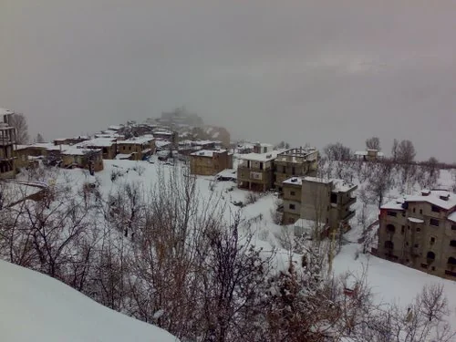

Walk Through Bekaa Kafra, Online
Short answer: Bekaa Kafra is the mountain village in Lebanon's Becharreh district where Saint Charbel was born, traditionally on May 8, 1828. This online tour has five stops: the map, the winter village, the family home and church, the grotto, and the road he left by in 1851.
Part of the Saint Charbel Encyclopedia. Read the full story of his life or browse all topics.
Find It on the Map
Bekaa Kafra sits in the Bsharri District of North Lebanon, above the town of Bsharri on the far side of the Kadisha Valley. The Cedars of God are a few kilometers east. Wikipedia puts the village at roughly 1,700 to 2,000 meters, and our village guide gives about 1,800. Several villages claim to be Lebanon's highest, so we say it is one of the highest.
Why it matters: The mountains around this village are where the future saint grew up before he walked south to a monastery. Open it on OpenStreetMap.
The Village in Winter

Winters here are cold and snowy. That was the world of a poor farming family in the 1830s: a small flock, stone walls and long months indoors.
Why it matters: This is the setting of Charbel's first years, long before the quiet of Annaya.
The Family Home and the Baptism Church
He was baptized Youssef, the youngest of five children of Antoun Zaarour Makhlouf and Brigitta Chidiac. According to our village guide, the family house still stands and is kept as a place of pilgrimage. The old village church where he was baptized is dated to some time between the seventh and thirteenth centuries. A second church, Notre-Dame, was built in 1925.
Why it matters: This is where his earliest life can still be visited. More in the village guide.
The Grotto
Tradition says that as a boy minding the family's animals he often prayed in a grotto just outside the village, kneeling before an image of Mary. Villagers now call it the Saint's Grotto.
Why it matters: A boy who sought a quiet place to pray became the man who later asked to live in a hermitage.
The Road He Left By
In 1851, at 23, Youssef left without telling anyone and walked to the Monastery of Our Lady of Mayfouq. He never went back to live in the village.
Why it matters: The road south from here leads to the monastery, the tomb and the hermitage. Follow it on the Annaya online tour.
Where to Go Next
Read the full Bekaa Kafra guide, see his life in order, plan a real trip with the Annaya visiting guide, or pray the nine-day novena.
Photo Credits
Stop 2: Potatoes8895, Wikimedia Commons, CC BY-SA 3.0. Stops 3 and 4 have no photograph yet. The tour uses real photographs only.